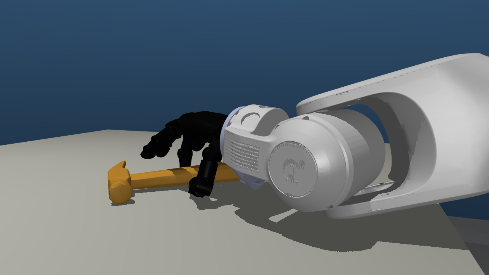
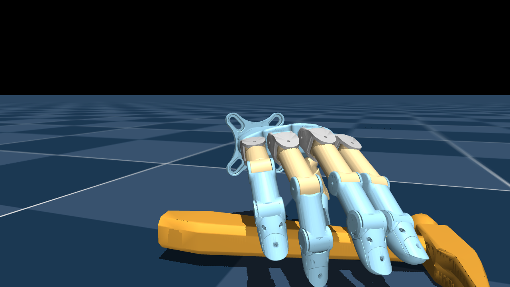

← dashboard · experiments · framework
The frozen S0 tracking policy — trained with a free-floating wrist — runs closed-loop inside the HandsOn benchmark's MuJoCo physics, driving a 7-DOF overhead ROKAE arm + Wuji Hand 2. It approaches, grasps, and lifts its hammer 13 cm off the table and holds it stably. Co-simulation: HandsOn's scene is the physics world; an mjlab environment is S0's observation/action engine, synced at 50 Hz; the arm follows S0's streamed wrist reference through online damped-least-squares IK with 60 ms lookahead.
Pre-position → approach → fingers wrap the handle → lift to +13 cm, held through the end of the clip. Arm tracking 7–18 mm, palm orientation 6° at the grasp.
Physical world (HandsOn): the hand closing on the handle.

S0's mirrored perception (mjlab engine): the same instant as the policy perceives it — its own hand and object, built by the exact training observation code.

An earlier version pressed the hammer without capturing it, and in the video the fingers visibly bent the wrong way. The two hand models are kinematically identical (all 20 joint axes, ranges and flexion directions match exactly) — the appearance was the policy reacting to a broken bridge. Three bugs, found and fixed in order:
① Palm-frame offset — the two models' palm body frames sit 28.5 mm apart along the fingers, so every commanded pose left the hand retracted by that much (handle ended up at the fingertips). ② Gravity tilt — aligning the two hammers' body frames rolled "up" by 9.5°; replaced with a yaw-only transform. ③ Stale observations (root cause) — the co-sim bypassed the env's data-refresh chain, so the policy observed frozen reset-time state every tick; its residuals integrated to the joint limits, pinning the fingers backwards. Restoring the exact refresh sequence brought the residuals from saturated (±0.99) to adaptive (0.02→0.7 through the grasp).
With every calibration in place, the same pipeline was run on two objects. With HandsOn's YCB hammer: fingertips within 2–13 mm of the handle, firm sustained grip, consistent perception — and still no capture, even with the mass scaled down 4.6× to match S0's training hammer. With hammerS (S0's own object, 64 g, physically inserted into the HandsOn scene): grasp and lift, first try. The boundary is therefore cross-object grasp transfer — the contact sequence S0 learned is specific to its object's handle geometry — and not the policy, the embodiment, perception, IK, or physics.
Co-simulation: handson_bridge/cosim.py (branch jd/mixed-s0-s2). Benchmark: HandsOn
(TsinghuaC3I), t08 hammer-nail scene, wuji2 embodiment, MuJoCo backend. Next: a transport+strike reference to
drive the nail, and more wuji2 tasks.